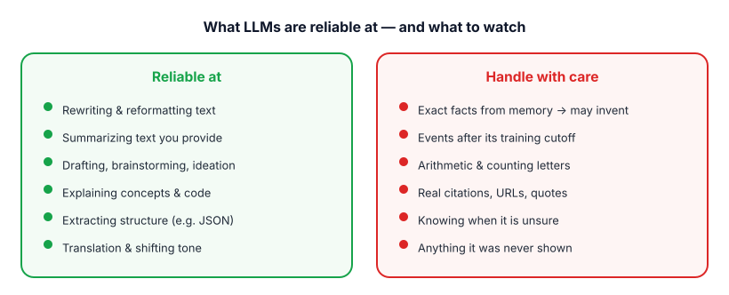
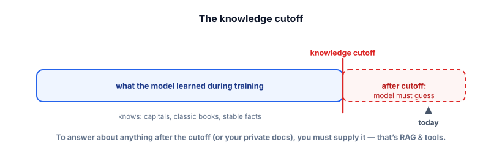
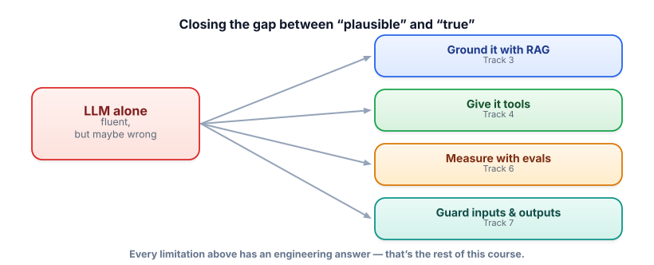

What LLMs can & can't do
This is the lesson that keeps you employed. Knowing exactly where these models shine and where they quietly fail is the difference between a demo that wows and a product that embarrasses you in front of users. It’s also the most-probed area in interviews.
An LLM is like a very well-read friend who has never once said 'I don't know'. Ask them to rewrite your essay or summarise a letter you hand them and they are brilliant. Ask them a date or a number from memory and they will answer in the same confident voice whether they remember it or are making it up. The analogy breaks because a person usually has some feeling of being unsure; the model's fluent tone is the same either way, so you have to build the checking in yourself.
Why limits matter more than capabilities
It’s easy to be impressed by what LLMs can do. The professional skill is knowing what they can’t — because that’s where products break. Almost every limitation follows directly from Lesson 1.1: the model predicts plausible next tokens, not true ones. When plausible and true line up, it looks brilliant. When they diverge, it fails confidently. Everything below is a corollary of that one fact.

Hallucination, demystified
A hallucination is when a model produces fluent, confident output that is factually wrong or fabricated — an invented statistic, a non-existent citation, a plausible but fake API method. The crucial reframing: this isn’t the model malfunctioning, it’s the model working exactly as designed. Its job is to produce likely text. When it doesn’t “know” something, it doesn’t fall silent — there’s no mechanism for that. It generates the most plausible-sounding continuation, which can be completely made up.
A model’s confidence is uncorrelated with its correctness. It states fabricated facts in exactly the same fluent, assured tone as real ones, because both are just “likely text.” You cannot tell a hallucination from a fact by how sure the model sounds. This is why you never ship an LLM answer to a high-stakes question without grounding or verification.
The knowledge cutoff
Because a model’s knowledge is frozen into its weights at training time (Lesson 1.1), it has a knowledge cutoff: a date after which it knows nothing. Ask about last week’s news, a library released yesterday, or your company’s internal policy, and at best it admits ignorance — at worst, it hallucinates a plausible answer.

And a few more limits that trip people up, all explainable from what you’ve learned:
- Arithmetic & character tasks: the model sees tokens, not digits or letters (Lesson 1.2), so multi-step math and “count the R’s” are genuinely hard without tools.
- No real memory: it only knows what’s in the current context window (Lesson 1.4) — no recall of past sessions unless you re-supply it.
- Prompt sensitivity: small wording changes can shift outputs, because you’re nudging a probability distribution, not querying a fact store.
- Inherited bias: trained on human text, models can reproduce its biases and stereotypes — a real safety concern (Track 7).
The good news: every limit has an engineering answer
Here’s the optimistic punchline, and the map for the rest of this course. None of these limitations are dead ends — each has a well-understood fix, and learning those fixes is applied GenAI engineering.

This uses a small, free, instruction-following model. Watch it confabulate a made-up fact, then watch grounding fix it:
!pip install transformers
from transformers import pipeline
qa = pipeline("text2text-generation", model="google/flan-t5-base") # small, free, instruction-tuned
# 1) UNGROUNDED — it has no idea, but will still answer something
q = "What is the warranty period of the Acme X200 blender?"
print("ungrounded:", qa(q, max_new_tokens=30)[0]["generated_text"])
# 2) GROUNDED — give it the fact and forbid guessing
context = "The Acme X200 blender comes with a 3-year limited warranty."
prompt = f"Context: {context}\n\nUsing ONLY the context, answer. If the answer is not in the context, say 'I don't know'.\nQuestion: {q}"
print("grounded: ", qa(prompt, max_new_tokens=30)[0]["generated_text"])The ungrounded call invents or fumbles an answer; the grounded call reports the real “3-year limited warranty,” because the fact is now in front of it and you’ve told it not to guess. That two-line difference — supply the facts, forbid guessing — is the entire spirit of RAG, which you’ll build for real in Track 3.
Assume a company of 20,000 employees asks its HR bot 60,000 questions a month, and policies change every quarter. The rates below are assumptions you would replace with your own eval results.
- Ungrounded baseline. Suppose a golden set of 300 real questions shows 8% confidently wrong answers when the bot answers from memory. 60,000 x 8% = 4,800 wrong answers a month, each one sounding certain.
- Why memory fails here. The policies are private (never in training data) and change after any knowledge cutoff. This is the "recall" column of the lesson's diagram, so no prompt wording fixes it.
- Ground it. Retrieve the current policy passages and instruct: answer only from them, cite the section, say "I don't know" otherwise. Suppose the eval now shows 2% wrong and 6% "I don't know".
- Do the new arithmetic. Wrong: 60,000 x 2% = 1,200 a month (down 75%). Abstentions: 60,000 x 6% = 3,600 a month, which you route to the HR inbox. If HR handles one in 4 minutes, that is 240 hours a month, so staff for it or improve the documents.
- Close the loop. Log each "I don't know" with the question. The top 20 questions usually point at missing or badly written policy pages; fixing those lowers both numbers.
- Keep it honest. Re-run the 300-question eval whenever policies, prompts or the model change. A grounding setup that passed last quarter can fail on this quarter's documents.
- Limits flow from one fact: the model predicts plausible tokens, not true ones.
- LLMs are strong at transforming text you provide, weak at recalling exact facts and knowing their own uncertainty.
- Hallucination is the mechanism working as designed; confidence ≠ correctness.
- The knowledge cutoff means recent events and private data must be supplied, not assumed.
- Every limit has a fix: ground (RAG), tools, evals, guardrails — the rest of this course.
Your legal-research assistant keeps citing court cases that don’t exist — with realistic names and citation numbers. Which fix most directly addresses the root cause?
Which task is an LLM LEAST reliable at without extra help?
Your bot gives the right refund policy 95% of the time when the policy is retrieved, but the team wants to raise accuracy by asking the model to also 'rate its confidence from 1 to 10' and hide answers under 7. What is the main problem?
1. Sort these into “reliable” vs “risky”: (a) summarize this contract I pasted, (b) what’s our refund policy?, (c) translate this paragraph to Spanish, (d) what’s the population of this city right now?, (e) reformat these notes as bullet points.
2. Rewrite this hallucination-prone prompt to be grounded: “What integrations does our product support?”
3. Explain to a skeptical manager why simply telling the model “always be accurate and never make things up” doesn’t solve hallucination.
▸ Show solutions & reasoning
1. Reliable: (a) summarize pasted contract, (c) translate a paragraph, (e) reformat notes — all transform text you provided. Risky: (b) refund policy and (d) current population — both require recalling specific facts the model may not have or that may be outdated. The tell: is the needed information in the prompt, or is the model being asked to remember it? In-prompt → reliable. From memory → risky.
2. Ground it: retrieve your real integrations list and constrain the answer. For example: “Here is our current list of supported integrations: [retrieved list]. Using only this list, answer the user’s question. If something isn’t listed, say it’s not supported.” Now the model is summarizing provided text (its strength) instead of recalling from memory (its weakness).
3. The instruction asks the model to do something it has no mechanism for. It can’t distinguish facts it “knows” from plausible patterns it’s generating — there’s no internal truth-check to switch on. Telling it to “be accurate” changes the style of the text, not its access to truth. Accuracy comes from giving it real information (grounding) and verifying outputs (evals/validation), not from asking nicely. Reliability is an architecture decision, not a prompt phrase.
You can’t eliminate hallucination, but you can drive it down a lot. The toolkit, roughly in order of power:
Ground the model (biggest lever): put the real facts in the context and instruct it to answer only from them — and to say “I don’t know” when they’re absent. A model summarizing provided text is far more reliable than one recalling from memory. Give it tools: for math, call a calculator; for fresh facts, call search; for your data, call your API (Track 4).
Don’t ask the model to be a database — let it use one. Constrain and verify the output: ask for citations and check that quoted text actually appears in the sources; validate structured fields; use a second model or rules to flag unsupported claims (Tracks 6–7). Lower the temperature for factual tasks so you’re not adding randomness on top.
And design the UX for doubt: show sources, let users verify, and don’t present generated answers as infallible.
The mental model to carry into every project: an LLM is a brilliant reasoner over the information you give it, and an unreliable witness about anything you don’t. Build systems that play to the first half and never depend on the second.
That’s the engine, end to end: tokens, embeddings, context, attention, sampling, and the honest map of strengths and limits. Time to check it stuck — and to see what an interviewer would ask. On to the Track 1 interview check.
labs/03_rag_local.pyFree and offline once set up: Ollama with qwen2.5:7b, plus the packages in labs/README.md. From the course folder:
python labs/03_rag_local.pyWhat to look for: Find the refusal branch: when the best retrieval score is below the threshold, the lab answers that it does not know instead of guessing. Ask a question your documents cannot answer and confirm it abstains; then lower the threshold and watch it start producing an ungrounded answer. The [doc-id] citations show which supplied text each answer came from.
Small samples: these labs use 5 to 20 cases so they run in minutes on a laptop. Where they report a rate, they print n and a 95% Wilson interval. Read them as a demonstration of the mechanism, not as a measured rate for your system; for that you need hundreds of cases and several seeds.
▸ Recorded output (our run, 2026-11-03, qwen2.5:7b on a laptop GPU)
out of the top 3. On this tiny corpus dense already wins; hybrid earns its keep on big corpora full of
near-identical codes (SKUs, error ids) that embeddings blur. Never assume: measure hit@k (lab 06).
5) Grounded answers with citations, and a refusal when retrieval is weak
Q: I was charged twice for one order. What happens now?
A: If you were charged twice for one order, the duplicate payment is reversed automatically within 3 business days [pay-01#0]. If it is not reversed after 3 business days, raise a billing ticket with both transaction ids.
citations=['pay-01#0'] all-cited-ids-were-retrieved=True
Q: Can I change my delivery address after the order has shipped?
A: No, you cannot change your delivery address after the order has shipped. According to [ship-03#0], the address can only be changed before the order is packed.
citations=['ship-03#0'] all-cited-ids-were-retrieved=True
Q: Do you deliver to Antarctica by drone?
A: I don't know based on our policies. (refused before calling the LLM: best cosine 0.27 < 0.35)
citations=[] all-cited-ids-were-retrieved=True
Look: every factual sentence carries an id you can check; the off-topic question is refused
cheaply by the retrieval threshold, so the model never gets a chance to make something up.Your numbers will differ a little run to run. Full log: labs/outputs. Source: labs/03_rag_local.py.
Warm-up. Label each request 'transform' or 'recall' and say which needs grounding: (a) turn these meeting notes into action items; (b) what is our VPN server address; (c) explain recursion simply; (d) what did the CEO announce yesterday.
▸ Solution
(a) transform, the input is supplied, low risk. (b) recall of private data, needs grounding. (c) mostly transform of well-known knowledge, low risk, though checking examples is wise. (d) recall of an event after any cutoff, needs grounding with a search or news source. The test is always: is the needed information in the prompt?
Transfer. A coding assistant suggests a library function that does not exist. Design two system-level checks that catch this before a user copies it.
▸ Solution
(1) Static check: run the generated code through a linter or type-checker against the installed library versions; an undefined attribute fails immediately. (2) Ground it: retrieve the library's real API docs for the version in use and tell the model to use only functions listed there. A third option is to run the code in a sandbox with a test. All three swap trust in fluent text for a machine check.
Stretch. Kalai et al. (2025) argue that common training and evaluation setups reward guessing over abstaining. Explain the argument in your own words and what it implies for how you score your own evals.
▸ Solution
If a benchmark gives 1 point for a right answer and 0 for both a wrong answer and 'I don't know', a model that always guesses scores at least as well as one that abstains when unsure. Training and tuning against such scores pushes models to guess confidently. For your own evals, score wrong answers worse than abstentions (for example +1 right, 0 abstain, -1 wrong) on high-stakes tasks, and report abstention rate next to accuracy. Then a change that cuts hallucinations shows up as an improvement instead of being hidden.
Junior What is a hallucination and why does it happen?
▸ Model answer
A hallucination is fluent, confident output that is wrong or made up, such as a fake citation or an API method that does not exist. It happens because the model is trained to produce likely text, not checked facts. When it lacks the information, the most likely continuation still sounds right, so it says something plausible in the same tone as a real fact. That is why confidence does not tell you correctness.
Mid How do you reduce hallucinations in a production assistant?
▸ Model answer
Ground it with retrieval and instruct it to answer only from the supplied passages, with citations, and to say it does not know otherwise. Give it tools for things it is bad at: calculators, search, our APIs. Validate outputs: check that citations exist and that quoted text appears in the sources, validate structured fields. Measure with a golden set that includes unanswerable questions, and track both accuracy and abstention. Design the UI to show sources. Lowering temperature, where the API still allows it, adds a little but does not fix the root cause.
Senior A stakeholder asks for a guarantee that the assistant will never give wrong answers. How do you respond?
▸ Model answer
I would say no system built on a language model can promise zero errors, and then offer what we can commit to: a measured error rate on a representative eval set, a target we gate releases on, abstention when the evidence is missing, citations so users can verify, human review for high-stakes actions, and monitoring with sampled audits in production. I would also ask which errors are most costly, because we can trade more abstentions for fewer wrong answers on those. Turning 'never wrong' into measurable, risk-weighted targets is the real engineering conversation.